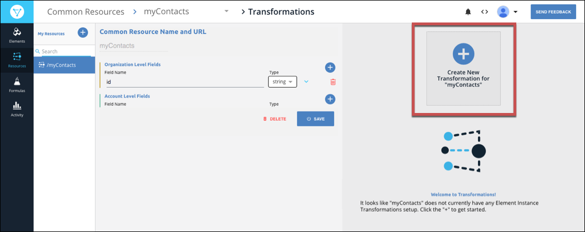
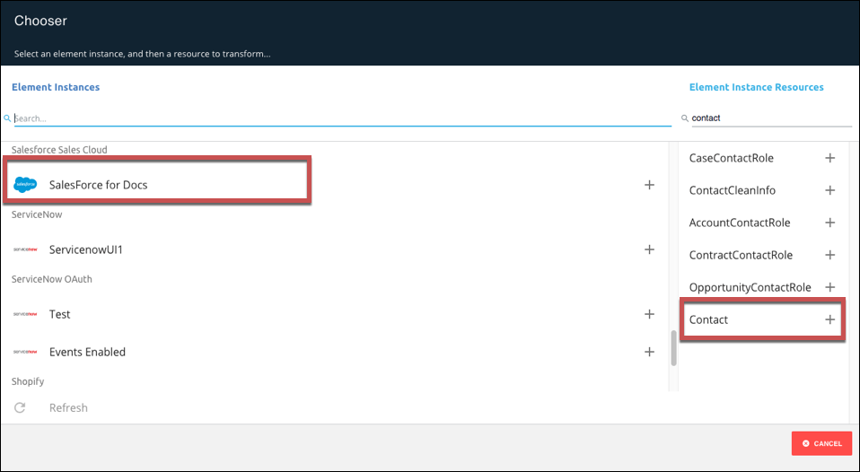
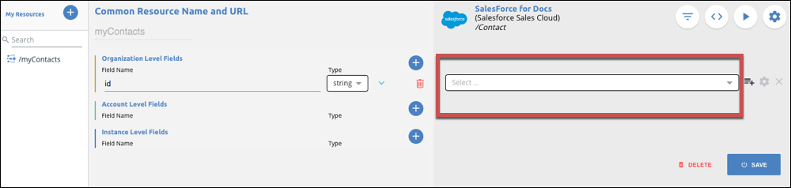
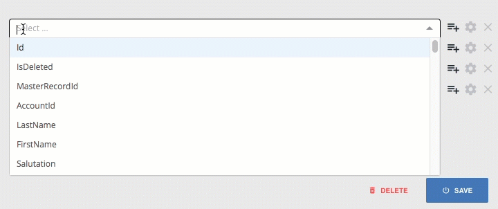
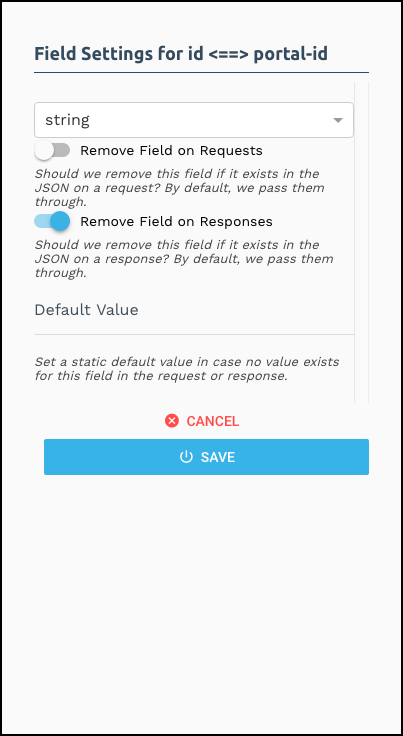
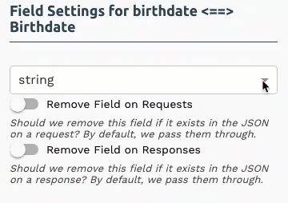
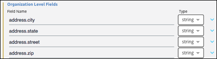
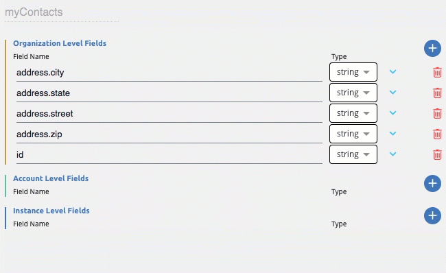

Find us at our new Help Center where we've combined our documentation and knowledgebase articles in one easy-to-search location.
We aren't updating the Developer Portal anymore, except for the Element Docs — all updates happen in the Help Center. We're retiring the Developer Portal as you know it in:
A transformation is the result of the process of mapping fields in your element instance resources to existing fields and objects in a common resource. After you create a common resource, you will select an element instance, choose the resource containing the objects that you want to map to the common resource, and map fields to the common resource. The end result is a a transformation of the selected objects in the element instance.
Before you can transform fields, you need to map the fields for each element instance to the common resource. The common resource fields are on the left and the element instance resource fields are on the right.
id field, which you can choose to map to an id field in the element's resource, delete, or rename to an entirely different field. If you created your common resource based on an existing resource, you will see more fields than just the id field. You can map fields one at a time, or you can add several fields to the common resource at once, and then map them later. These instructions describe mapping a single field at a time.
This section describes mapping to a common resource at the organization level. You must be an organization level user to map to organization level fields. For more about mapping at different levels, see Access Levels and Transformations.
To map fields:
On the Common Resources > Transformations page, click Create New Transformation.

Select the Element Instance, and then select the Element Instance Resource.
The Resources available to that Element Instance appear in the Element Instance Resources column after you select a resource. 
Beginning with the default field id, select a field on the right to map to id. 
Click next to the Organization Level Fields to add another field.
Enter a name for the field, and then choose the data type if the field is something other than a string.
Select the corresponding field on the right to map to the new field.

Continue adding resources until you finish, and then click Save.
To map another instance, click Transformations in the breadcrumbs at the top of the page.
You can use custom Javascript when the basic object mapping does not meet your needs. For example, you might need to break a single address object into its component parts (address.city, address.state, address.street, and address.zip).
To access the custom Javascript functionality:
Common resource functions include the parameters and functions in the following table:
| Parameter | Description |
|---|---|
| transformedObject | The transformed object, with any mappings already taking place. |
| originalObject | The original object, with no transformations or mappings taking place on it. |
| fromVendor | Is the transformation being executed coming back from the vendor (on an API response) ? |
| done | The callback function needed to call at the end of your JS. Call done to terminate a given step. |
require this library, it is available by default.
CE.randomString(): Generate a random string (approx. 10 characters long).CE.randomEmail(): Generate a random email address.CE.md5(str): Create an MD5 hash from a string value. Takes a string as a parameter. Returns a string.CE.b64(str): Encode a string in base64. Takes a string as a parameter. Returns a string.CE.decode64(str): Decode a string from base64, using UTF-8 encoding. Takes a string as a parameter. Returns a string.CE.hmac(algo)(enc)(secret, str): HMAC hash a string (str) using the provided secret (secret), algorithm (algo), and encoding (enc). See https://nodejs.org/api/crypto.html#crypto_class_hmac for more information about the algorithm and encoding parameters.CE.hmac[algo][enc](secret, str): This is a set of convenience functions that allow HMAC hashing using some common algorithms and encodings. For example, CE.hmacSha1Hex(secret, str) will create an HMAC SHA1 hash of the provided string, using the provided secret, and return a hex string. You can replace algo and enc with the following values:
algo: Sha1, Sha256, Md5
enc: Hex, base64lodash library. To use this library, simply require it in your script. It is possible to use the library modules, as well, such as lodash/fp.util library. To use, require it in your script.Adding fields to a resource when a certain endpoint does not provide them:
function (originalObject, transformedObject, fromVendor, done) {
transformedObject.isCreatedThisYear = (fromVendor && transformedObject.createdDt > '2016-01-01');
done(transformedObject);
}
Two endpoints identify priority differently: one users numbers (1 or 2) and the other descriptions (low or high).
function (originalObject, transformedObject, fromVendor, done) {
if (!fromVendor) done(transformedObject); // only care when returning data from the vendor
transformedObject.priority = transformedObject.priorityNumber === 1 ? 'low' : 'high'; // we prefer our priority to be the string representation, so we convert the endpoints "priorityNumber" field to the appropriate string representation here.
done(transformedObject);
}
Combining FirstName and LastName fields.
function (originalObject, transformedObject, fromVendor, done) {
if transformedObject.Name = originalObject.FirstName + ' ' + originalObject.LastName;
done(transformedObject);
}
If you do not see an object that you expect in the instance resources, you can still map it by entering the object name. This sometime happens for custom objects you created at the endpoint.
To map a custom object:
Click .
The list becomes a text entry field.
Enter the name of the object.
Cloud Elements passes through all fields in the JSON on both requests and responses. However, you can choose to remove all unmapped fields or specific fields from requests or responses.
To remove unmapped fields:
To remove fields from requests or responses:
Switch on or off the sliders for the requests or responses.
For example, in the following configuration, we remove the portal-id field from the response. 
You can transform the data types on vendor objects. In most cases, you only need to select a new data type, but for dates you also provide a mask, or date format.
To change data types:

If no values exist for a specific field, but you do not want to remove it, you can set a default value.
To set a default value:
After you set up your mapping, you can test your transformations.
To test a transformation:
Test a Put or Patch by selecting the appropriate method, and then entering the JSON request.
Click Run.
You can add the common resource you create to the instances of each affected element.
To add a common resource to API docs:
Try it out:
We display sub-objects in dot notation. You can also use dot notation to nest objects in your common resource. For example, you might want to create nested address fields like those shown in the example below:

The JSON result of this nested object:
{
"Address": {
"city": "Cambridge",
"state": "MA",
"street":"1234567 Elm St",
"zip":"99999"
}
}
You can map fields at different levels depending on your access. Organization level users can map at any level, while other users can map only at the instance level.
To map fields at the account level (organization level users only):
To move mapping between levels:
Click the arrow next to the fields to move the fields between levels.
